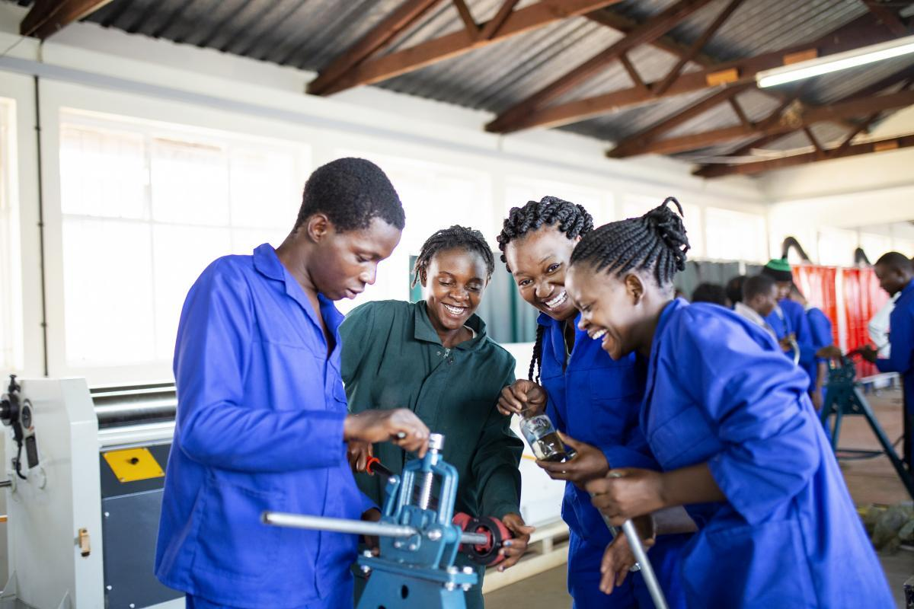
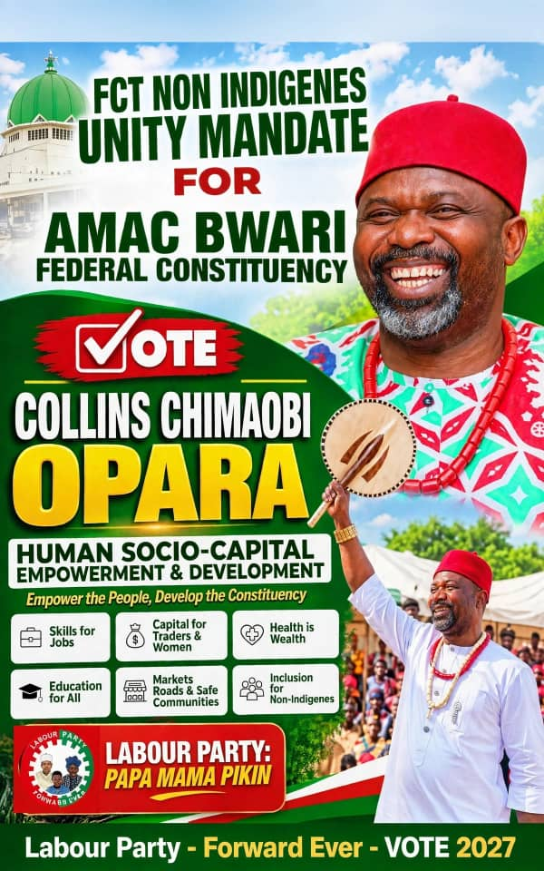
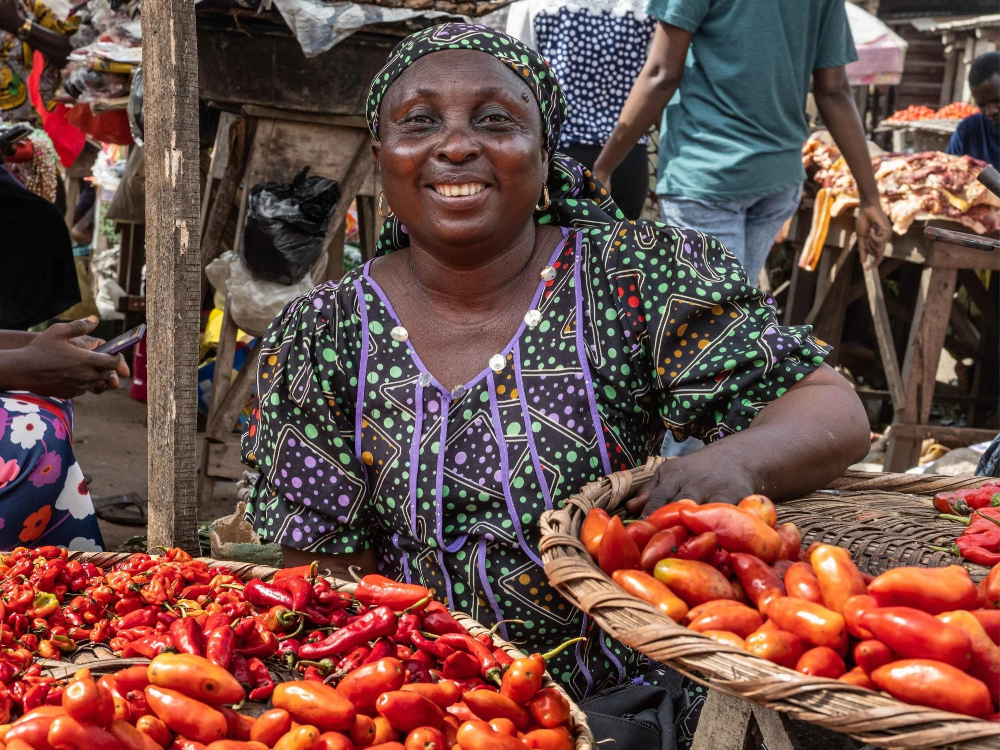
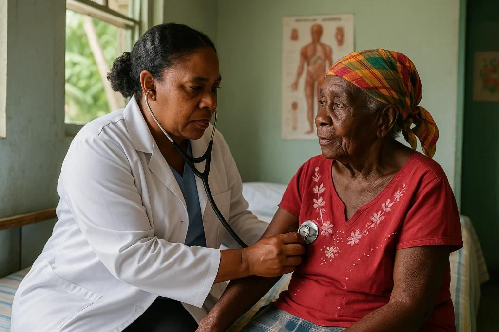
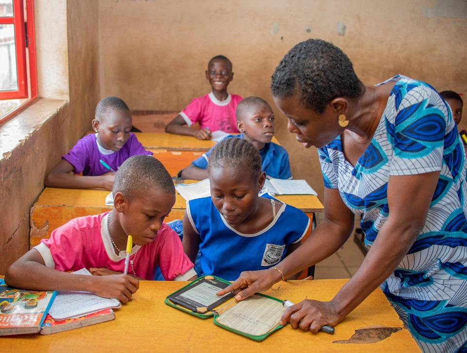
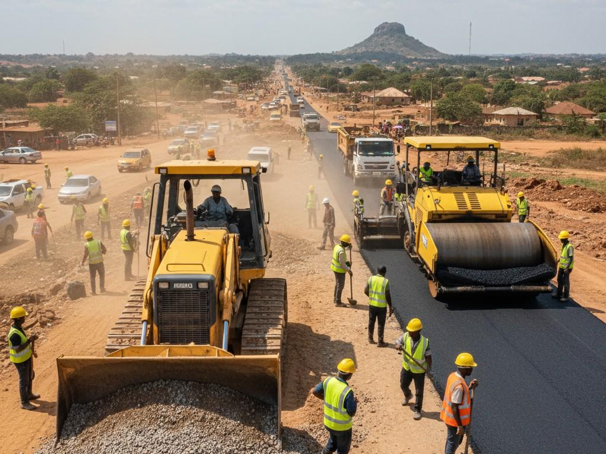
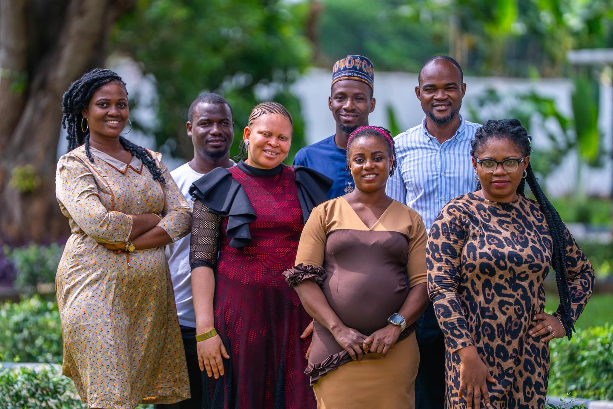

Skills for Jobs
Promoting skills development, vocational training and employment opportunities for our people.
Human Socio-Capital Empowerment & Development
Empower the People, Develop the Constituency
Labour Party — Papa, Mama, Pikin.

Comrade Collins Chimaobi Opara is presented under the FCT Non-Indigenes Unity Mandate for AMAC/Bwari Federal Constituency, with a vision centred on human socio-capital empowerment and development.
His campaign emphasises unity, equal opportunities, community participation and the inclusion of non-indigenes in the development and representation of the Federal Capital Territory.
Through the Labour Party platform, the campaign promotes a constituency where every resident can participate in building a stronger and more prosperous community.
Learn More About the Candidate →Human Socio-Capital Empowerment & Development. Empower the People, Develop the Constituency.

Promoting skills development, vocational training and employment opportunities for our people.

Supporting traders and women through access to capital, entrepreneurship and business development opportunities.

Advocating accessible healthcare, improved health services and healthier communities.

Promoting inclusive education, learning opportunities and support for students and families.

Supporting better markets, improved road infrastructure and safer communities across AMAC/Bwari.

Promoting equal opportunities, meaningful participation and inclusive representation for non-indigenes in constituency development.
A united AMAC/Bwari where indigenes and non-indigenes thrive together.
Opportunities and jobs for the youth who carry this constituency forward.
Infrastructure that serves every ward, not a select few.
True federal representation and inclusion for non-indigenes.
Discover the Candidate's Vision →Building a constituency where every resident has the opportunity to contribute, participate and benefit from development.
Join the FCT Non-Indigenes Unity Mandate. Participate, volunteer and help build a constituency that works for everyone.
Follow campaign activities, community engagements, announcements and developments across AMAC/Bwari Federal Constituency.
View Campaign Updates